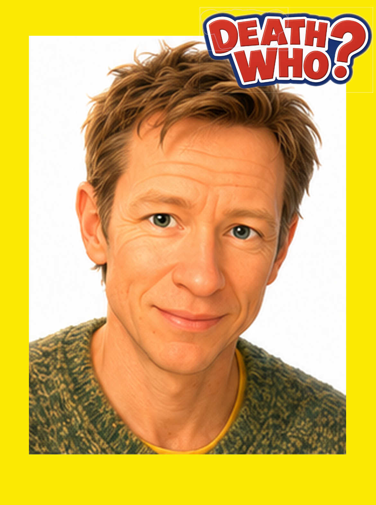
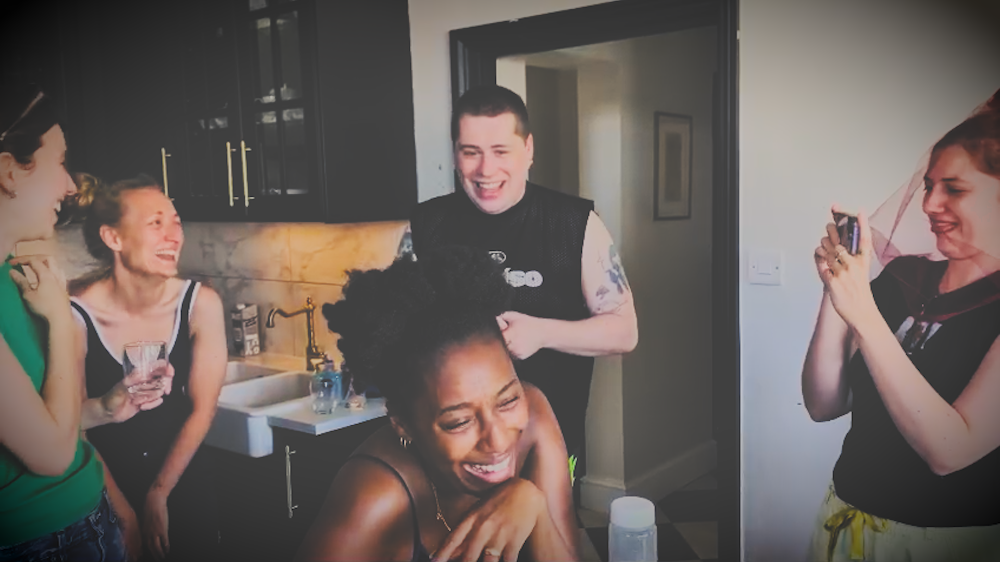

Basic structure
While staying together at a large house by the sea, your group of friends will be slowly murdered, one by one.
The game starts on Night One and continues throughout Day Two.
During waking hours there is normally a murder around every two hours and a trial and execution around every two hours. There is roughly an hour between events, but the Host may change the pacing depending on the number of players and what happens during the game.
The Host will tell you what to do and when.
The deceased
Players who are murdered by the Killers, or executed by the group as suspected Killers, become deceased.
Vote in subsequent trials or continue murdering if they were a Killer.
Keep investigating, influencing other players, playing games, scoring points and shaping what happens next.

What happens if you win or lose?
There are two overall outcomes. Either the Killers win and the Innocents face punishment, or the Innocents win and the Killers face punishment.
The losing team faces the final forfeit the following morning.
Leaderboard, games & immunity
On Day Two, all players — living and deceased — are ranked on the Leaderboard.
Players move up the Leaderboard by taking part in games around the house and self-reporting their scores.
Games may include Elevator Snap, Hammerslang, indoor badminton and other challenges. The games available and the points awarded for each will be revealed on the day.
Getting caught is.
At times determined by the Host, the player at the top of the Leaderboard will be awarded immunity from the next event — either a Murder or a Trial.
Deceased players therefore remain important. They cannot be murdered or executed again, but they can occupy the top of the Leaderboard and block living players from gaining immunity.
Players who fail to record scores and participate in the Leaderboard will face the final punishment.
The player at the bottom of the Leaderboard will also face the final punishment, regardless of which side wins the game.
Treasure Hunt
On the afternoon of Day Two there will be an optional Treasure Hunt around the local area.
Players may hunt alone or work together in groups.
The first person to complete the Treasure Hunt earns immunity from the next event — either a Murder or a Trial.
If a group completes it together, that group must decide which one person receives the immunity.
The winner — or winning group — does not have to reveal to the other players that they completed the Treasure Hunt first.
Roll calls
When the Host calls a Roll Call, you must attend. Roll Calls are displayed on the Countdown. Points are deducted for tardiness.
Typical schedule
The exact pacing is controlled by the Host. A typical Day Two moves approximately like this:
How the winners are determined
When five living players remain, murders and executions stop until 7pm on Night Two.
The remaining players must agree on a Pact of Three: the three people they believe must be innocent.
Innocents win.
Killers win.
Innocents win.
If there is no consensus on a Pact of Three by 9pm, the Killers win.

Additional rules
This is a live format with unpredictable twists and turns. It must necessarily differ from versions made for viewing audiences.
- At no point can the Killers outnumber the Innocents. If this is about to happen, the Killers must sacrifice one of their own.
- Before 7pm on Night Two, trials may only be held when directed by the Countdown. Players may not take matters into their own hands.
- When eight or more players remain, if a Killer is found in a trial, the Killers have the option to commit two murders in the subsequent killing rather than one.
- When six players remain, if the Killers outnumber the Innocents, the Killers must sacrifice one of their own.
- When five players remain, murders and trials stop until 7pm on Night Two.
- Between 7pm and 9pm, the living players must use their votes to agree on a Pact of Three.
- At 9pm, if more than three players are left in the Pact process or there is no consensus, the Killers win.
Why these rules exist
Why a final forfeit?
The game is designed to engage all players at all times, dead or alive. The final reveal therefore has stakes for everyone.
Why can't the Killers outnumber the Innocents?
If the Killers outnumber the Innocents, an unforeseen advantage has developed and must be corrected so the game remains active.
Why a Pact of Three?
If two or more Killers reach the final five, they could otherwise have an advantage that allows them to stop strategising. The Pact requires everyone to remain engaged.